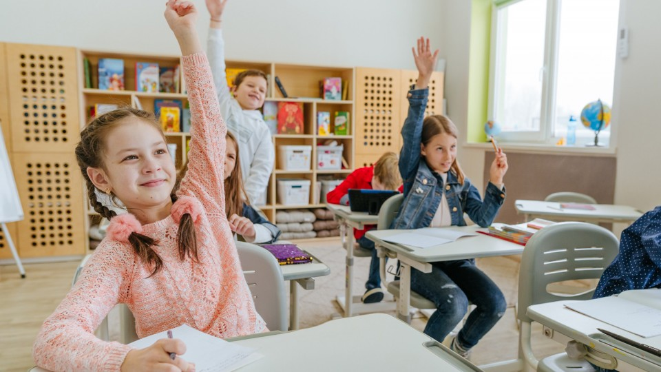

L'école de nos jour
Qu'est ce que l'école
L'école est un établissement dans lequel est donné un enseignement collectif(général ou spécialisé).
En effet,elle a plusieur avantage
L'école sert à instruire les élèves, à leur transmettre des connaissances. A l'école, on apprend à lire, écrire, compteret à comprendre l'histoire du monde, la géographie.
Elle améliore la santé et les moyens de subsistance,contribue à la stabilité sociale et stimule la croissance économique à long terme. Elle est aussi essentielle à la réalisation de chacun des 17 objectifs de développement durable.
Cependant, de nos jour on remarque que l'école ne fournis plus convenablement l'enseignement qu'il devrait.Le systhème d'étude adopté de nos jour ne favorise pas le developpement.il rend les etudiants de nos jour ZINZIN l'école les amène a se donner à des pratique nuisible comme:
- La cyber-criminalité
- la dépendance au réseau sociaux
- Mauvais usage des outils d'apprentissage
La belle preuve à la base "j'était un bon gars mais bon" bref
Il est donc très important de changé le système éducatif et surtout en Afrique. 